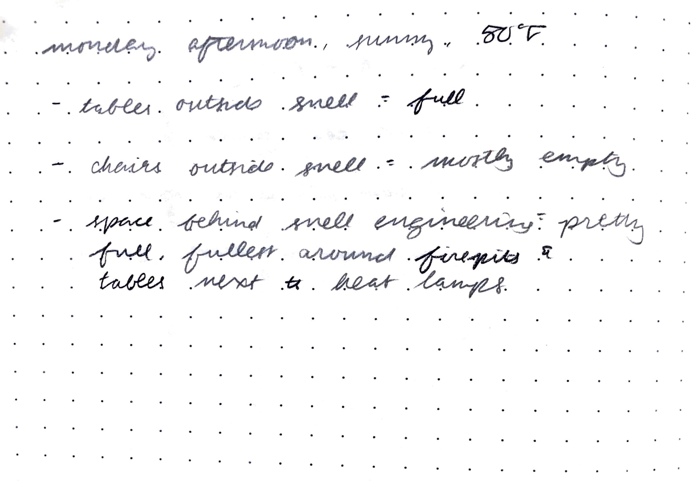
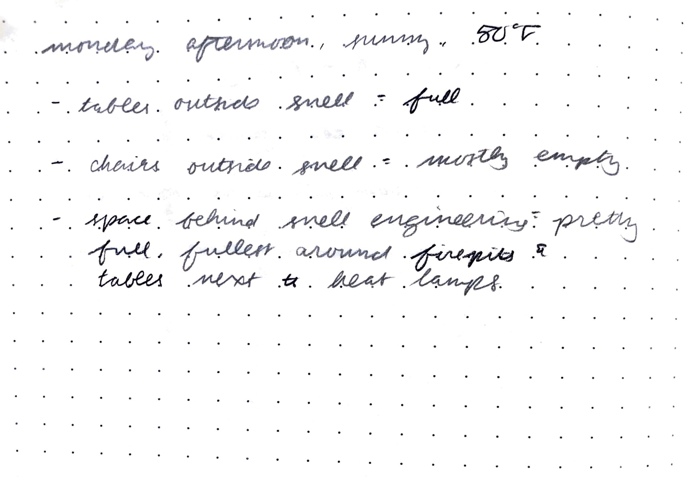
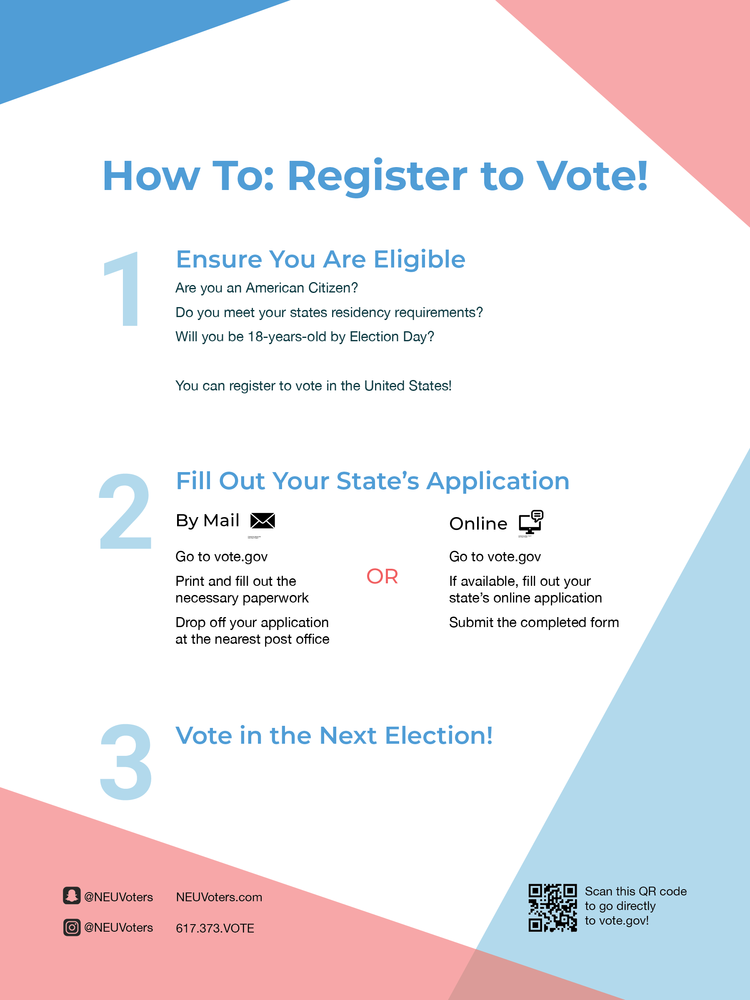
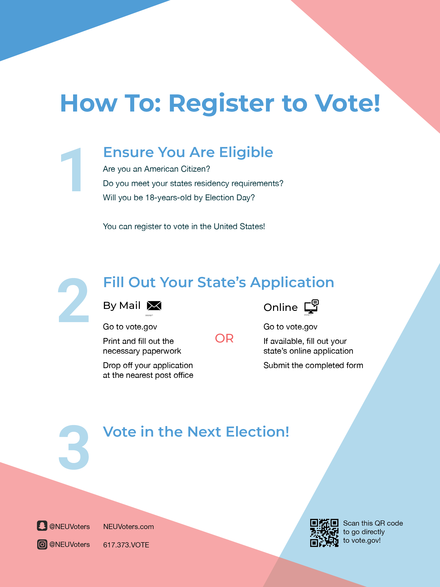

Campus Reimagined

Overview
The campaign "Campus Reimagined" is the result of an assignment that only had two constraints: it had to involve a local community, and it had to relate to wellness/the outdoors. After some preliminary interviews, I settled on the following problem statement: Northeastern students need a way to voice their opinions and ideate about the spaces on campus so that they can experience student-driven changes that make campus a better place for their wants and needs.
Research Methods
Ethnography

 

Analogous Solutions

I also started considering the issue that students' needs were always changing; for example, when COVID-19 hit, safe, outdoor spaces to work became a necessity for students and their mental health. Thus, rather than trying to design for current pain points, I began exploring systems that would promote consistent improvements to campus, such as the "Envision Cambridge" campaign.
Survey
sent out survey to cover as wide of a variety of northeastern students as possible, targeting different interests, grades, where they lived, etc. to gauge what kinds of answers would be givenInterviews
Intermediate Iterations
storyboard, participatory probe with the following graphics
 


Final Iteration
The campaign would consist of booths strategically placed around campus (outside of residential buildings, rather than in the middle of campus where people were more likely to be walking between classes) to encourage engagement. At each booth would be moderators— who would be handing out the flyers and answering questions—, in addition to free stamps, envelopes, stickers, and pins.
Success Metrics